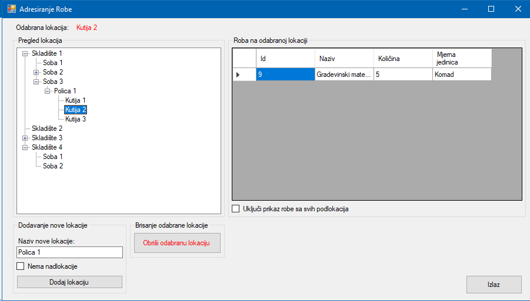

Prozor adresiranje robe služi za dodavanje novih lokacija skladišta, te za direktni pregled robe koja se nalazi na odabranoj lokaciji.
"Pregled lokacija" pokazuje sve lokacije skladišta i njihove podlokacije. "Roba na lokaciji" prikazuje robu koja se nalazi na odabranoj lokaciji. U slučaju da "Uključi prikaz robe sa svih podlokacija" nije aktivirano, klikom na tipku se prikazuje sva roba koja se nalazi na nižim lokacijama od odabrane.
"Dodavanje nove lokacije" koristi za dodavanje podlokacije odabranoj lokaciji ili za dodavanje bazične lokacije u slučaju da je "Nema nadlokacije" selektirano.
"Obriši odabranu lokaciju" briše odabranu lokaciju u slučaju da na lokaciji nema robe i lokacija nema podlokacije.
"Izlaz" izlazi iz prozora.
